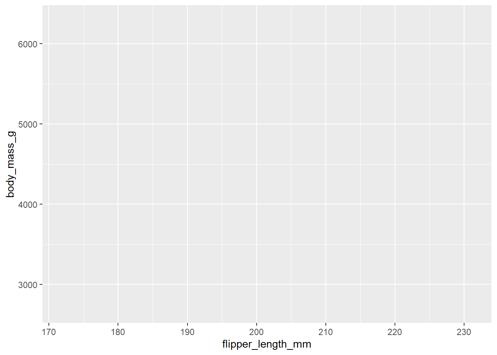
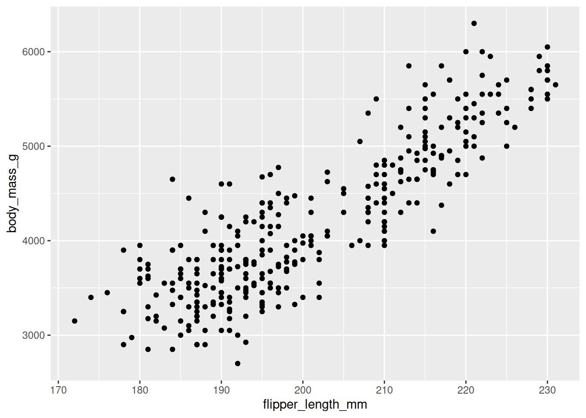
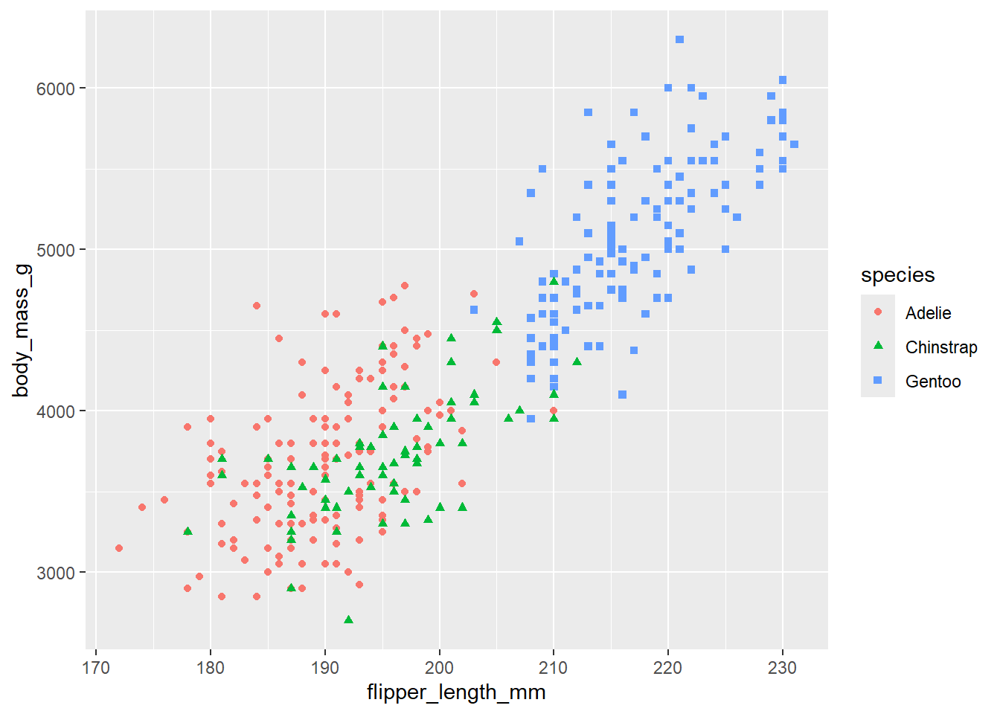
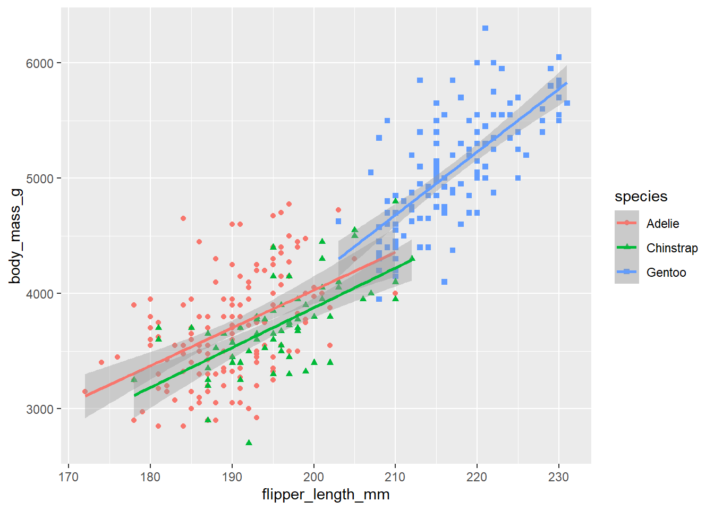
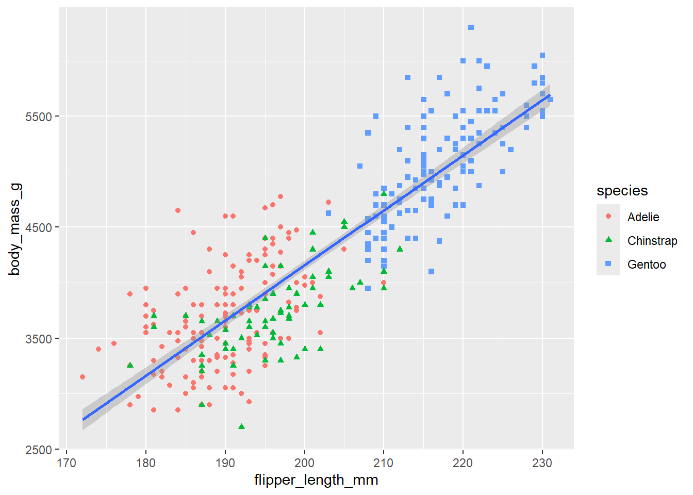
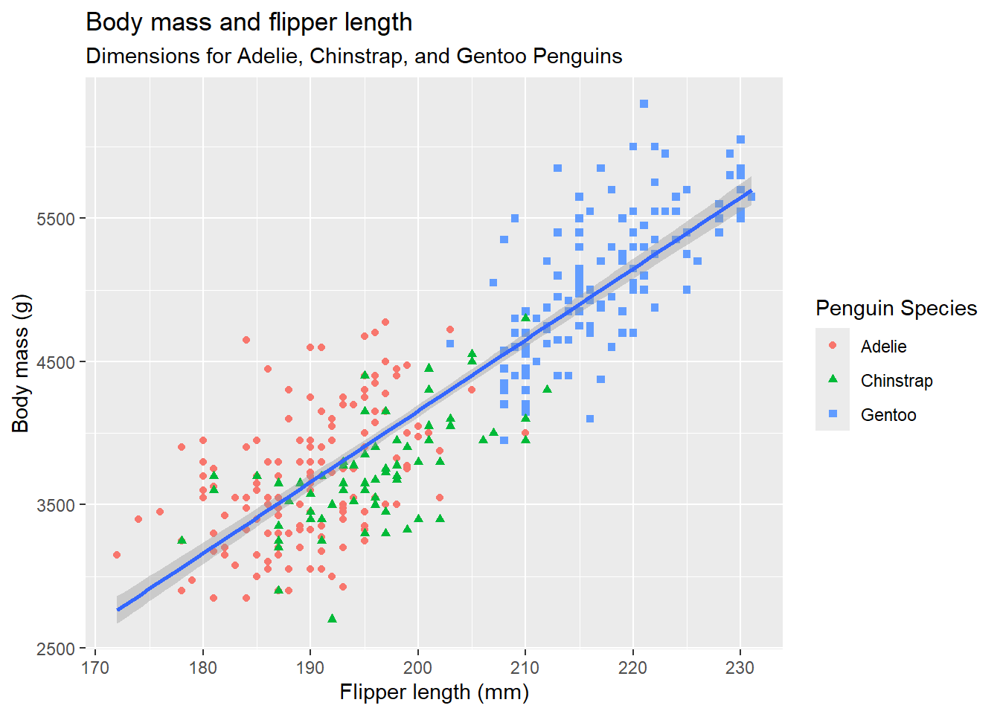

options(repos = c(CRAN = "https://cloud.r-project.org/"))
if(!require(palmerpenguins)){install.packages("palmerpenguins");require(palmerpenguins);}
if(!require(dplyr)){install.packages("dplyr");require(dplyr);} # needed for glimpse
if(!require(ggplot2)){install.packages("ggplot2");require(ggplot2);}49 47. Intro to ggplot2
The info below is adapted from the book “R for Data Science, second edition” (r4ds2e). The book is available both online and in print. It was written by Hadley Wickham, who in large part is the driving force behind the tidyverse packages.
The online version of r4ds2e is here: https://r4ds.hadley.nz/
The intro to ggplot2 chapter appears here: https://r4ds.hadley.nz/data-visualize
In class we covered sections 1.1 through 1.3 of chapter 1, Data visualization from r4ds2e. In that context we discussed different “geometries” of a graph (e.g. dot plot, histogram, bar plot, box plot), aesthetics of a particular geometry (e.g. x position, y position, color, shape, size). We also discussed the concept of how variables in your data can be “mapped” to particular aesthetics.
49.1 Code from sections 1.1 thorugh 1.3 of r4ds2e
Below is a summary of the code from sections 1.1 through 1.3 of r4ds2e. Please see the following webpage for more info: https://r4ds.hadley.nz/data-visualize
# Here are the first few rows data.
penguins |> print(n=25)# A tibble: 344 × 8
species island bill_length_mm bill_depth_mm flipper_length_mm body_mass_g sex year
<fct> <fct> <dbl> <dbl> <int> <int> <fct> <int>
1 Adelie Torgersen 39.1 18.7 181 3750 male 2007
2 Adelie Torgersen 39.5 17.4 186 3800 female 2007
3 Adelie Torgersen 40.3 18 195 3250 female 2007
4 Adelie Torgersen NA NA NA NA <NA> 2007
5 Adelie Torgersen 36.7 19.3 193 3450 female 2007
6 Adelie Torgersen 39.3 20.6 190 3650 male 2007
7 Adelie Torgersen 38.9 17.8 181 3625 female 2007
8 Adelie Torgersen 39.2 19.6 195 4675 male 2007
9 Adelie Torgersen 34.1 18.1 193 3475 <NA> 2007
10 Adelie Torgersen 42 20.2 190 4250 <NA> 2007
11 Adelie Torgersen 37.8 17.1 186 3300 <NA> 2007
12 Adelie Torgersen 37.8 17.3 180 3700 <NA> 2007
13 Adelie Torgersen 41.1 17.6 182 3200 female 2007
14 Adelie Torgersen 38.6 21.2 191 3800 male 2007
15 Adelie Torgersen 34.6 21.1 198 4400 male 2007
16 Adelie Torgersen 36.6 17.8 185 3700 female 2007
17 Adelie Torgersen 38.7 19 195 3450 female 2007
18 Adelie Torgersen 42.5 20.7 197 4500 male 2007
19 Adelie Torgersen 34.4 18.4 184 3325 female 2007
20 Adelie Torgersen 46 21.5 194 4200 male 2007
21 Adelie Biscoe 37.8 18.3 174 3400 female 2007
22 Adelie Biscoe 37.7 18.7 180 3600 male 2007
23 Adelie Biscoe 35.9 19.2 189 3800 female 2007
24 Adelie Biscoe 38.2 18.1 185 3950 male 2007
25 Adelie Biscoe 38.8 17.2 180 3800 male 2007
# ℹ 319 more rows# You can also use the following command to "View" the entire tibble in the
# RStudio viewer window:
#
#View(penguins) # It is a capital "V" in "View"# Setting up the "aesthetics"
# This doesn't display any actual data.
ggplot(
data = penguins,
mapping = aes(x = flipper_length_mm, y = body_mass_g)
)
# You will start seeing "data" on the plot once you set the "geometry".
# Here we set the "geometry" to be geom_point().
# Each "dot" on the plot represents a row of data from the tibble, i.e. one penguin.
ggplot(
data = penguins,
mapping = aes(x = flipper_length_mm, y = body_mass_g)
) +
geom_point()Warning: Removed 2 rows containing missing values or values outside the scale range (`geom_point()`).
# We can add some color and shapes to each dot on the plot based on the species.
ggplot(
data = penguins,
mapping = aes(x = flipper_length_mm, y = body_mass_g, color = species, shape=species)
) +
geom_point()Warning: Removed 2 rows containing missing values or values outside the scale range (`geom_point()`).
# The function call, geom_smooth(method = "lm")
# adds linear regressions lines, one for each species.
#
# Since "color=species, shape=species" was mapped in the ggplot function, the data was
# divided into 3 different subsets, one for each species.
# That is why there are 3 different linear regression lines, one for
# each species (compare this with the next plot).
ggplot(
data = penguins,
mapping = aes(x = flipper_length_mm, y = body_mass_g, color = species, shape=species)
) +
geom_point() +
geom_smooth(method = "lm")`geom_smooth()` using formula = 'y ~ x'Warning: Removed 2 rows containing non-finite outside the scale range (`stat_smooth()`).
Removed 2 rows containing missing values or values outside the scale range (`geom_point()`).
# In the following plot, "color=species, shape=species", was moved
# from the ggplot function to the geom_point function.
# Since we did not set the color in the ggplot function we no longer
# consider the data as three different subsets and we get a single linear
# regression line for the entire set of data.
ggplot(
data = penguins,
mapping = aes(x = flipper_length_mm, y = body_mass_g)
) +
geom_point(mapping = aes(color = species, shape = species)) +
geom_smooth(method = "lm")`geom_smooth()` using formula = 'y ~ x'Warning: Removed 2 rows containing non-finite outside the scale range (`stat_smooth()`).
Removed 2 rows containing missing values or values outside the scale range (`geom_point()`).
# Finally, the following plot adds a title and subtitle to the graph
# and labels for the x-axis, y-axis and legend.
ggplot(
data = penguins,
mapping = aes(x = flipper_length_mm, y = body_mass_g)
) +
geom_point(aes(color = species, shape = species)) +
geom_smooth(method = "lm") +
labs(
title = "Body mass and flipper length",
subtitle = "Dimensions for Adelie, Chinstrap, and Gentoo Penguins",
x = "Flipper length (mm)", y = "Body mass (g)",
color = "Penguin Species", shape = "Penguin Species"
)`geom_smooth()` using formula = 'y ~ x'Warning: Removed 2 rows containing non-finite outside the scale range (`stat_smooth()`).
Removed 2 rows containing missing values or values outside the scale range (`geom_point()`).
49.2 Other stuff
The info above goes through the main ideas of how to use ggplot2. Using that knowledge you should be in good shape for learning on your own how to use other more advanced features of ggplot2.
The rest of the webpage, https://r4ds.hadley.nz/data-visualize, shows how to use several other features of ggplot2. The following topics are described on the rest of that webpage:
Other geometries (histograms, box plots, etc)
How to use several other geometries (i.e. bar blots, histograms, density plots, box plots, stacked bar plots).
Facets
How to break up a graph into several smaller graphs using the facet_wrap function.
How to save a plot to an image file
You can use the ggsave function to save an image file with a copy of the last plot that you created. You can then import the image file to other files, e.g. a Word document, a powerpoint, etc.
See ?ggsave for more info.